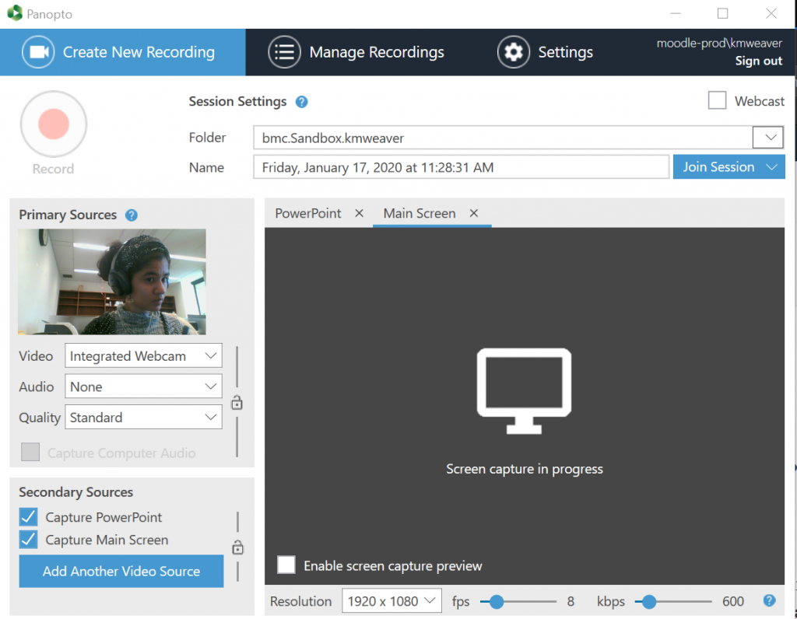

Recording Your Lecture: Outside the Classroom or Off-Campus
Bryn Mawr subscribes to a lecture capture service called Panopto,
which is designed to make it easy for people to record lectures
and talks and post the recordings for others to view them. Panopto
can simultaneously capture audio and video of a person lecturing and
a screencast of what they project overhead from the podium computer during
a lecture. Recordings are automatically uploaded to Panopto's servers
and can be shared with students via a course Moodle site or with viewers
outside of a course via a public link. It is quick and easy to record with Panopto
off campus or at home! Read on to find out how to do so!
Getting Ready to Record
When getting ready to record, ensure that you have:
-
A computer (preferably with a built-in webcam)
-
A reliable internet connection
-
Successfully installed the Panopto Desktop App onto
the computer you will be using to record (Check out these links for instructions
on how to freely download and install the software For downloading onto a Mac
For downloading onto a PC).
Please note:
-
If your computer doesn't have a webcam you can always
borrow one
from Canaday Library's equiptment loan pool. (
Click here for more information about the
equiptment we have, or to check the loan status for a particular piece of tech.
.)
-
You will also need to have a Teacher role in a Moodle site in order to record lectures.
(Any Moodle site will do, it doesn't have to be an academic course-related site.) If you
don't have one already, please email e-mail help@brynmawr.edu
Starting a Recording
-
Login to your computer and open any applications and files that you will use to during your lecture.
For example, if you wanted to show PowerPoint slides, a web page, and an image in a PDF
document, you would open your PowerPoint file, your web browser, and the PDF file.
-
Note:
Panopto will use all of the RAM, cache space, and processing power available when it is launched.
Opening your presentation materials before opening Panopto ensuresthat computer resources are
reserved for those processes.
-
Launch the Panopto recorder, of which there are two options to do so. You can either:
1) open the Panopto desktop app that you installed onto your computer or 2) login via Bryn
Mawr's online Panopto platform.
-
Launch Option 1: Opening the Panopto Desktop App
-
Double-click on the desktop Panopto icon (a green circular ribbon with a blue arrow inside it, below in the system tray (PC) or Dock (Mac)
-
If prompted to log in, log in using your normal Bryn Mawr username and password.
If you are not prompted and someone else's name is listed in top right hand corner of the recorder window
(e.g. "moodle-prod.acoll"), click
Sign out
, and then log in.
-
Launch Option 2: Visit Bryn Mawr's online Panopto platform.
-
Open the website and log in with your Bryn Mawr credentials. Click on the blue Create
button and select Record a new session from the drop-down list. (which also includes
these options: "Panopto Capture-Beta", "Upload Media","Webcast", "Scheduled Recording", "Build a session",
"Playlist", and "New Folder"). This task is pictured below.
-
Choose the course you are recording to/for from the drop-down Folder menu at the top of the page.
-
Give the recording a Name or use the default (recording day, date, and time).

-
Check the audio levels by speaking and watching the microphone bar:
-
Move the slider bar to increase or decrease the volume as needed
-
If nothing shows up in the audio level window, click Settings and try different options
on the Default audio source menu until you find one that works. Call (x7440) or email the Help Desk
if none do.
-
Check the video settings:
-
Be sure to check the Instructor Video box is checked.
-
Panopto automatically records a screencast of what is presented on the recording computer.
You do not need to do anything to enable this and you cannot turn this off.
-
When you are finished with set up, click Record to start recording.
For more detailed information, including how to use on-screen features during a recording,
see Panopto's guide on How to Record a Video
and Best Practices for Recording
Stopping and Uploading a Recording
-
To end a recording, click Stop in the Desktop app.
-
In the dialog box that appears, choose Done to upload the recording to the Panopto server for processing and streaming.

-
Lock the computer (Windows) or put it to sleep (Mac), but do not turn it off.
The recording will finish uploading in the background as long as the computer remains on and connected to the Internet. (Even if you log out and another user logs in.)